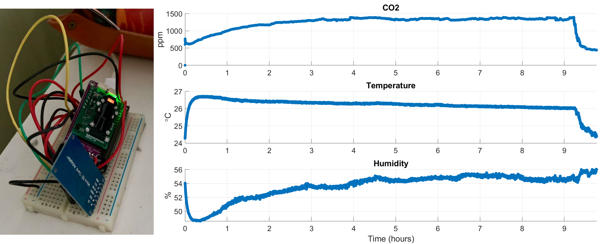

Overnight Bedroom CO₂ Monitoring
This project started from a simple question: how good is the air quality in my bedroom overnight when I sleep with the window closed and no active ventilation? Rather than guessing, I built a small data logger to measure it.
I used a Sensirion SCD30 CO₂ sensor and an ESP32 board, programmed to periodically sample CO₂ concentration, temperature, and humidity and store the data locally on a microSD card. The whole prototype runs on a breadboard and can be powered from USB, making it easy to place on a nightstand.
Data
The plot below shows data from one full night. At time 0 hours the window was open and the measured CO₂ level was around 600 ppm, which is typical outdoor air for Boston. I then closed the window and went to sleep.
After about 1 hour, the CO₂ concentration passed 1000 ppm, a commonly used threshold indicating that indoor air quality is starting to degrade. Overnight, CO₂ kept rising and reached approximately 1400 ppm.
Around 9 hours, I opened the window again. As fresh air entered the room, the CO₂ level dropped rapidly back toward baseline, clearly visible in the plot.
Left: ESP32 + SCD30 CO₂ sensor and microSD card adapter on a breadboard, used to log CO₂, temperature, and humidity overnight. Right: Overnight CO₂, temperature, and humidity in the bedroom. CO₂ rises from ~600 ppm to ~1400 ppm with the window closed, then drops quickly when the window is opened again around 9 hours.